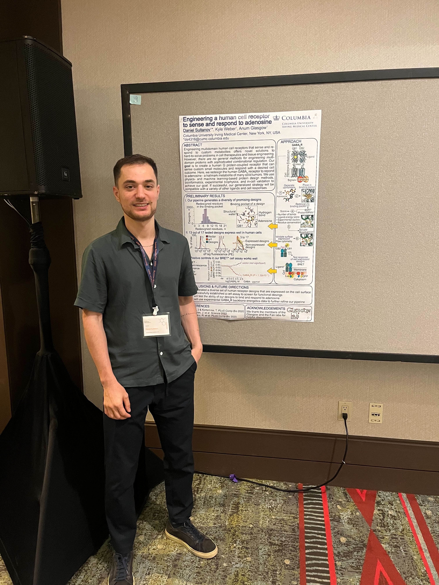

News#
7/2/2023 It’s summer!
We have a lot to celebrate:
Columbia undergraduates Emily and Pranav joined the lab, and they both also secured outside summer funding to support their research.
We got some of our work out there:
A large collaborative paper that describes our computational pipeline to get more information from cryo-EM structures of complexes, and which shows how our designed ACE2 traps neutralize new strains of SARS-CoV-2. (So crazy to see hypotheses about strategies for mutation-resistant viral therapeutics tested in real life.)
Our paper diving into the allosteric mechanism of the lac repressor.
A preprint in collaboration with our neighbors in the Steckelberg lab, which is about the evolution of viral protein inhibition of the human ribosome.
At the end of the summer, Daniel will join the Biophysics graduate program at UC Berkeley! Our first graduate. :’) They will do great in California.
Melody and Airam join us for the summer from the Amgen program and the Rosetta Commons REU program, respectively.
Belen and Andrew were the first students from our lab to pass their qualifying exams! Great job. See their cool posters (courtesy of Chenlin and Savannah).

{kind=link}
{kind=link}
{kind=link}
{kind=link}
{kind=link}
Daniel presented their work at the SURF poster session, Kyle gave a talk in the BMB seminar series, and Chenlin gave a talk at the Columbia Biochem/Biophysics Mixer.
Andrew was Honorably Mentioned for his NSF GRFP application. Nice!
Belen organized two lessons at Hamilton Grange Middle School in Washington Heights to engage in some fun science with our young neighbors.
{kind=link}
{kind=link}
{kind=link}
{kind=link}
{kind=link}
{kind=link}
{kind=link}
{kind=link}
{kind=link}
We are working hard this summer to move our projects along!

<
10/15/2022 We’ve had a good summer and fall.
Some updates:
Belen and Andrew officially joined the lab, and Kyle is officially a graduate student!
Neel joined us as a Rosetta intern over the summer, and then lucky for us, he continues here as a Columbia undergraduate!
Chenlin joined the lab as our venerated postdoc!
Despite COVID hitting our group (again), Belen and Neel made it to RosettaCon 2022, where they presented cool posters.
Neel’s poster |
Belen’s poster |
|---|---|
We are grateful for support from the JGI/DOE Community Research Program in Functional Genomics (towards computationally redesigning transcription factors for continuous microbial bioprocessing of plastics), Orange Grove Bio and Alleycorp (backing our PARROTS pipeline to build new antiviral biotherapeutics), NIH NIGMS (for our efforts to understand general principles for protein allostery), the Alice Bohmfalk Foundation (funds to buy computers), and the NSF ACCESS program (compute credits).
Our lab co-hosted an NSF GRFP writing workshop in September, and we put in a few of our own applications.
I’m proud of our lab members for working together and helping each other grow their projects.
Our tomato plants also grew a lot. See below.
{kind=link}
5/26/22 The Glasgow Lab is HERE 😎
It’s been a great first semester!
{kind=link}
Some updates:
our lab is a member of the Rosetta Commons
we had some lab renovations and got equipment
our first two rotation students, Kyle Helms and Julia Urban, joined us in January and left us in April. We miss them and their fantastic science
our next batch of rotation students, Andrew Reckers and Belen Sundberg, joined us in April. They are really awesome
after optimizing and troubleshooting for a couple months, Malcolm collected our first large HDX/MS datasets (shoutout to the world-class ASRC MS facility!)
Daniel got an Amgen scholarship for summer research!
Daniel, Kyle W. and Anum completed Columbia’s Lab-to-Market bootcamp - here’s a 1-min video about our project
Kyle W. designed and tested his first set of artificial transcription factors (and was admitted to Columbia for grad school!)
we applied for grants
we all gave our first group meetings
Daniel and Kyle W. learned a lot at pyrosetta bootcamp
we triumphed/survived some plasmid contamination issues and rampant COVID
We’re excited to go hard this summer to advance our ongoing basic science, applied, and methods development research projects!